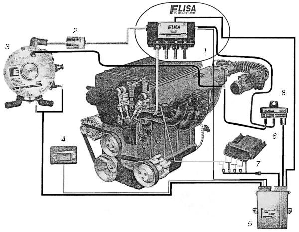
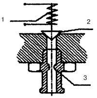
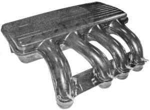
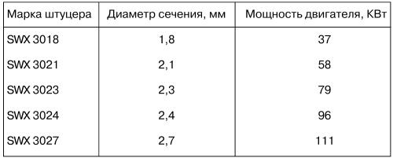
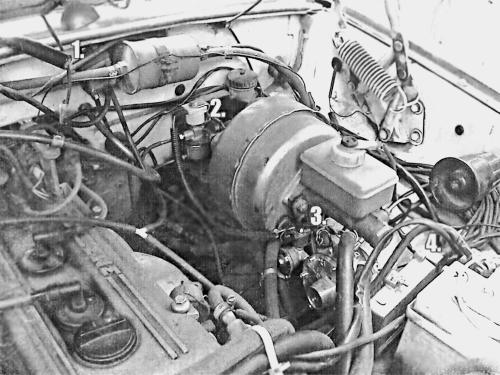

Система «Elisa» (Италия).
В современных двигателях с распределенным впрыском бензина и электронным управлением количество топлива, подаваемое в камеру сгорания, а стало быть, и весь процесс подготовки и сжигания смеси, зависит от сигналов, поступающих с датчиков:
– расходомера, определяющего объем проходящего воздуха;
– датчика, посылающего сигнал о частоте вращения коленчатого вала двигателя;
– датчика, определяющего положение дроссельной заслонки (TPS);
– лямбда-зонда, сигнализирующего о количестве кислорода в выхлопных газах;
– датчика детонации;
– датчика, посылающего сигнал о температуре двигателя.
Компьютер, управляющий впрыском бензина, – бортовой электронный блок управления (ЭБУ) на основании полученных с датчиков сигналов определяет время открытия бензиновой форсунки для каждого цилиндра, обеспечивая при этом подачу оптимального количества бензина на каждом цикле «всасывание» работы цилиндров двигателя.
Современные европейские автомобили снабжают системой бортовой диагностики ЕОВД (Европейская Бортовая Диагностика), контролирующей работу двигателя при подготовке и сгорании топливной смеси. Автомобили, оснащенные этой системой, отвечают самым жестким требованиям, соответствующим новым стандартам по токсичности отработавших газов.
При установке на автомобиль газовых систем требуется оборудование, которое действует на принципах, совместимых с принципами работы системы впрыска бензина. Это системы последовательного или распределенного впрыска газа.
При использовании «Elisa» существенно улучшаются эксплуатационные и экологические характеристики двигателя.
Суть и условия работы двигателя, использующего эту систему, в следующем:
– дозирование газа выполняется на основе исходного сигнала для срабатывания бензинового инжектора;
– место подачи газового топлива максимально приближено к месту подачи бензина – перед впускным клапаном;
– впрыск газа производится в той же фазе цикла и в тот же цилиндр, что и впрыск бензина;
– сигналы электронного блока управления газовым топливом обеспечивают полную совместимость с ЕОВД.
Рассмотрим принцип работы системы «Elisa» фирмы «Эльпигаз» на основе схематичного изображения системы управления подачи газа (рис. 37).

Рис. 37. Схема соединений системы «Elisa»: 1 – блок форсунок четырехсекционный; 2 – газовый фильтр; 3 – редуктор-испаритель; 4 – переключатель вида топлива с указателем уровня газа в баллоне; 5 – ЭБУ газовый; 6 – ЭБУ бензиновый; 7 – бензиновые форсунки; 8 – датчик давления и разрежения.
Газ к форсункам подается под давлением 0,095 МПа оригинальным одноступенчатым газовым редуктором-испарителем (3). В каждый цилиндр газ поступает от соответствующей форсунки. Все форсунки конструктивно выполнены в форме единого блока (1), состоящего из четырех электромагнитных форсунок. Этот вариант дешевле, чем набор отдельных форсунок.
При работе на газовом топливе блок форсунок впрыскивает топливо во впускной трубопровод около впускных клапанов. Управляет открытием и закрытием этих форсунок установленный электронный блок управления газовой системы «Elisa» (5), который соединен с штатным электронным блоком управления (6) впрыскового двигателя; электропроводами, используемыми для управления бензиновыми форсунками.
В этом блоке электрическая цепь управления бензиновыми форсунками (7) размыкается. Таким образом, «газовый» ЭБУ «перехватывает» сигнал управления бензиновыми форсунками и производит корректировку этого сигнала, что необходимо в связи с особенностями работы двигателя на газе.
При корректировке бензинового сигнала придерживаются следующего принципа: количество дозируемого газового топлива, которое определяется временем открытия газовой форсунки, должно быть энергетически эквивалентно количественной потребности в бензине в данный момент, определяемый базовым ЭБУ (обеспечивается временем открытия).
Следует учесть, что увеличение времени открытия газовой форсунки ограничено. Чтобы избежать чрезмерного увеличения времени открытия газовой форсунки, необходимо увеличить ее пропускную способность путем подбора рабочего сечения штуцеров на выходе из форсунок.
Система «Elisa» позволяет, и в этом ее особенность, варьировать в конструкции газовых форсунок их рабочее сечение, чтобы подобрать требуемое.
Газовая форсунка представляет собой электромагнитный клапан, в который на выходе вставлен калиброванный штуцер (рис. 38). В каждый цилиндр газ подается своей форсункой. Газ от штуцера форсунки поступает в штуцер на впускном коллекторе (рис. 39) по резиновому трубопроводу. При этом используется сигнал, предназначенный для бензиновой форсунки того же цилиндра, что позволяет сохранить синхронизированный впрыск и при газовом режиме.

Рис. 38. Схема газовой форсунки: 1 – обмотка катушки соленоида; 2 – клапан; 3 – калиброванный штуцер.

Рис. 39. Коллектор с газовыми жиклерами.
При подборе калиброванных штуцеров необходимо учесть факторы, определяющие выбор диаметра их отверстия (рабочего сечения): мощность двигателя, количество цилиндров (см. табл. 2).
Во время работы на газовом топливе ЭБУ (5) (рис. 37) получает информацию о давлении и температуре газа, поступающего на форсунки, и о разрежении во впускном коллекторе.
Датчик давления и разрежения (8) отслеживает все изменения в газовой магистрали блока форсунок (1) впускного трубопровода, преобразовывает их и передает на ЭБУ газовой системы.
Разница #Р между давлением газа Pr, поступающего из редуктора-испарителя, и разрежением Pv впускного трубопровода есть абсолютное давление, которое и используется газовым ЭБУ для корректировки времени открытия газовой форсунки: #P=Pr—Pv.
Таблица 2. Параметры для выбора калиброванных штуцеров 4-цилиндрового двигателя

Датчик температуры газа, расположенный на блоке форсунок, также подает на ЭБУ газовой системы корректирующий сигнал. Таким образом, происходит измерение и учет величины абсолютного давления и температуры газа, которые постоянно меняются с изменением режимов работы двигателя и других внешних условий. Этим в значительной степени обеспечивается хорошая приемистость автомобиля, особенно на переходных режимах движения.
Оригинальный программный продукт ЭБУ газовой системы «Elisa» позволяет провести индивидуальный подбор, контроль и корректировку параметров впрыска газа. Настройка системы достаточно проста для выполнения благодаря тому, что все процедуры наглядно отображаются в среде Windows на экране персонального компьютера, подключенного через диагностический разъем к ЭБУ газовой системы. Это позволяет установить и настроить систему «Elisa» в мастерской.
Далее делается анализ выхлопных газов, и проверяются параметры во время дорожного теста. Предусмотрена также возможность ввода файла с программой для определенного типа автомобиля.
ЭБУ газовой системы одновременно выполняет задачу эмуляторов, без которых раньше не обходилось переоборудование впрысковых двигателей. Когда ЭБУ газовой системы получает сигнал управления бензиновыми форсунками, он одновременно посылает в базовый ЭБУ имитирующий сигнал нормальной работы электрической цепи этих устройств.
В системе «Elisa» не требуется проведение эмуляции сигнала лямбда-зонда.
Важнейшим достоинством системы «Elisa» является стопроцентное отсутствие «хлопков» во впускном трубопроводе.
Система управления подачей газа успешно эксплуатируется на большинстве известных зарубежных моделей легковых автомобилей (Daewoo, Ford, Renault, Peugeot, Opel, BMW и др.) и на отечественных (Волга, Жигули и др.).
У нас система «Elisa» была установлена на автомобиле ГАЗ-3110 с инжекторным двигателем (рис. 40). Пробег автомобиля с данным оборудованием был успешен. Уже пройдено 40 000 км, включая полный цикл зимней эксплуатации в условиях Москвы. Как показали испытания, эта система работает безотказно.

Рис. 40. Инжекторный двигатель ГАЗ-3110: 1 – датчик давления газа; 2 – электромагнитный газовый клапан; 3 – редуктор-испаритель; 4 – ЭБУ газа.